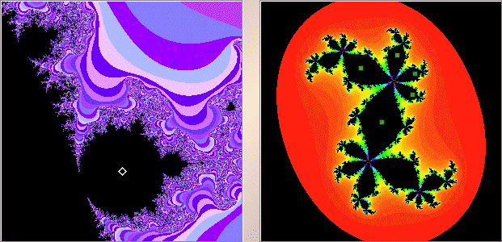

Purpose To become familiar with relations between regions of the Mandelbrot set and the structure of the corresponding Julia sets; in particular, locating cycles corresponding to the Mandelbrot set region. To explore generalizations to some other functions, including some with more than one critical point.
Material The Mandelbrot and Julia set software, or some similar package.
Conclusion Iterates that converge to cycles unpack much of the structure of the Mandelbrot set and its relatives. In this, the iterates of the critical point give the clearest pattern.